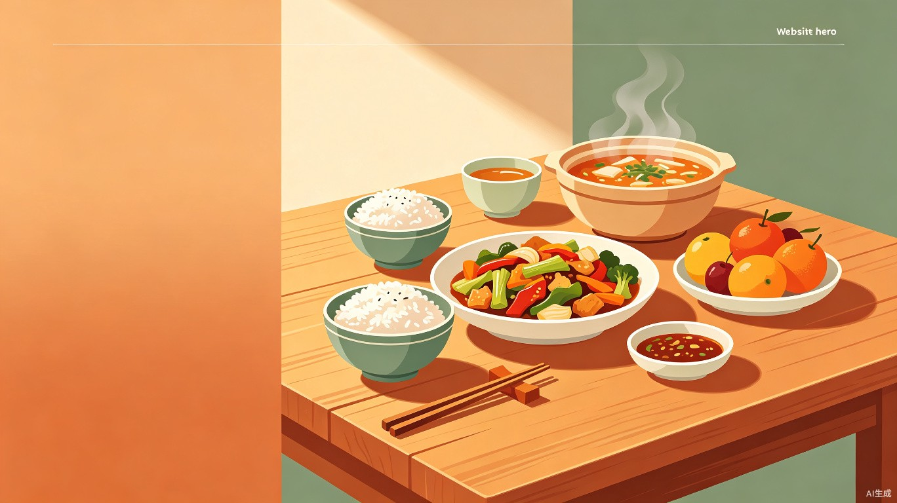

智能每日食谱组合推荐，科学搭配，营养均衡
根据不同人群的营养需求，定制专属每日食谱
18-60岁一般人群
12-18岁生长发育期
孕期营养补充
增肌减脂需求
低热量控体重
60岁以上人群
《中国居民膳食指南（2022）》核心推荐
每天摄入谷薯类、蔬菜水果、畜禽鱼蛋奶和豆类食物，平均每天12种以上，每周25种以上。
餐餐有蔬菜（每天300-500g），天天吃水果（200-350g），每天液态奶300ml以上。
平均每天120-200g，每周吃鱼2次或300-500g，优先选择鱼，少吃深加工肉制品。
每天食盐不超过5g，烹调油25-30g，添加糖不超过50g（最好25g以下）。